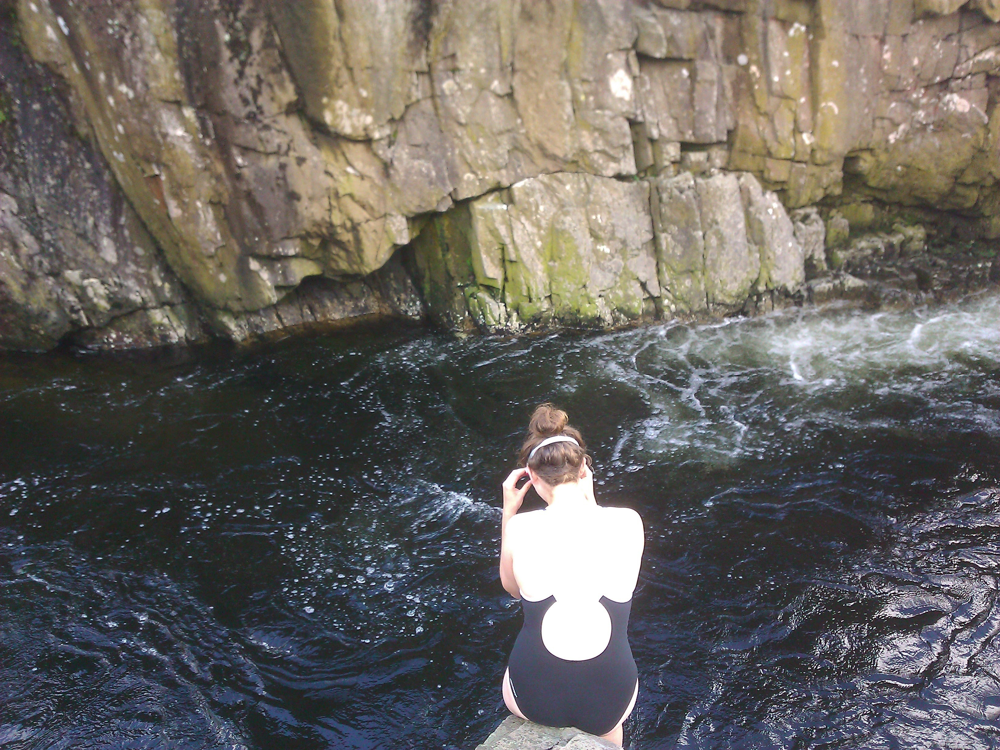
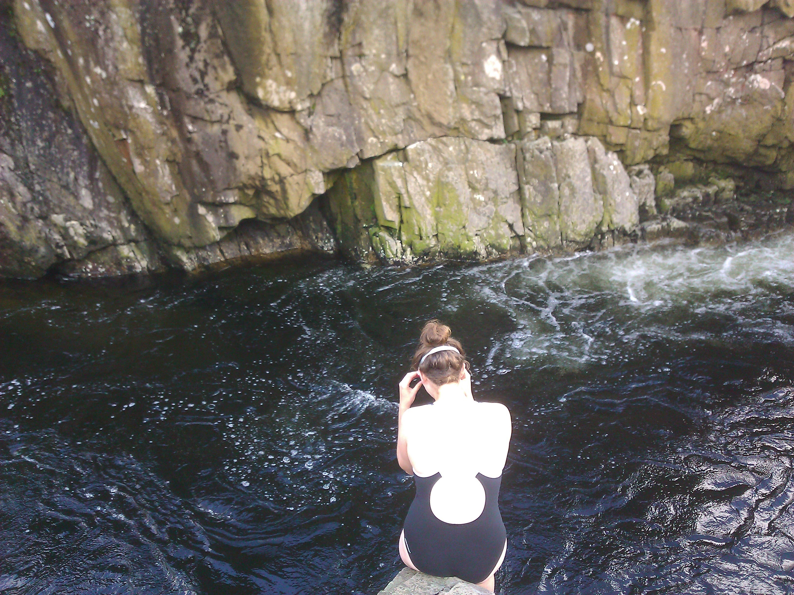
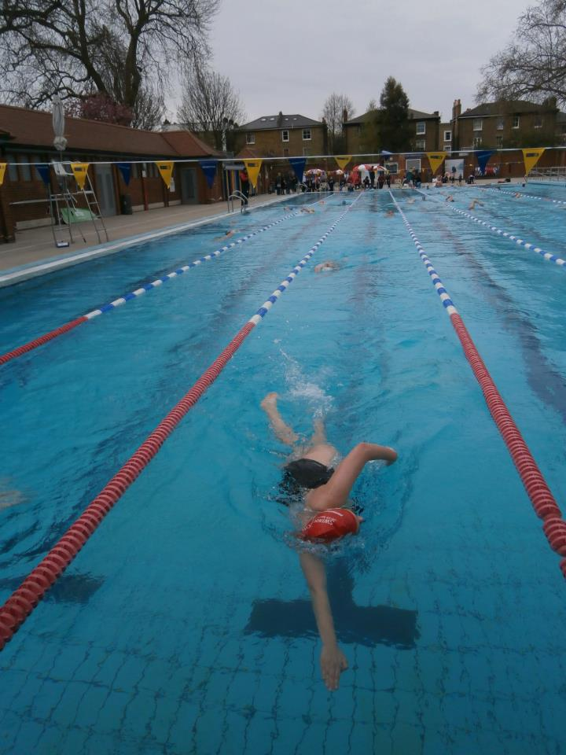
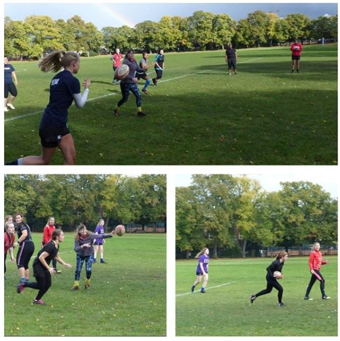

About me
I am a recently graduate from Kingston University (2014-17), where I studied Physical Geography and graduated with a 2:1. I’m currently furthering my expertise in the field of Geographical Information Systems, studying for an MSc in GIS at The University of Leeds.
My interest for geography truly began within the Lake District in Cumbria, where I spent much of my childhood. The love of the outdoors and nature was born by hiking, kayaking and swimming in the national park here, a time in my life I would never alter.
.jpg) 

Through my adolescence and time at university, I have gained and continued a passion for multiple sporting activities. My focus through most of life was my swimming, a focus that resulted in me gaining a NPLQ Lifeguarding and a Health and Safety in the Workplace certificates in 2013, resulting in myself working as a lifeguard throughout my undergrad. The love of swimming also led me into swimming multiple Swimmathon’s with my sister and mother in 2014 and 2015 in Brockwell lido, both resulting in gaining £200 for Cancer Research.
My University time also allowed me to pursue new hobbies such as joining the Kingston University Woman’s Rugby Club (KUWR), where I spent two years. The wonderful team I joined helped expand my social circle with the wonderful team, and allowed myself to relieve the stress of university work onto the pitch. In my first year at Kingston I also dabbled into the film society and triathlon team, but this was a shorter lived passion.
 CV
Personal Description
I am a confident hard-working individual or team member. I have good communication skills, and am people-centred. I fit into teams, but take responsibility for personal and team achievement. I’m flexible, and learn quickly, with good general computer skills, and have done troubleshooting and support for users in a library, and worked in a high-pressure university clearing house contact centre. I have carried out resource mapping work for a small energy development business, and work experience at Lightsource plc, the largest UK solar developer.
I am a recent Geography graduate, with an emphasis on physical geography. My undergraduate thesis was a GIS-based project on coastal erosion, modelling the loss of shoreline over time using ArcGIS. I am currently studying for an MSc in Geographical Information Systems at The University of Leeds. I have also completed a BTEC in Business Studies prior to my University studies.
I’m interested in applying technology to understand and manage both the built and natural environment, and my current studies are providing the technical tools and framework to enable this. I’m keen to apply my skills on behalf of an organisation providing services and management expertise to its clients.
Ongoing Degree
- MSc Geographical Information Systems at The University of Leeds
| Course Name | Course Description |
|---|---|
| Programming for Geographical Information Analysis: Core Skills | This module was designed to teach the basics of computer programming, focusing on the Python programming language. |
| Data Visualisation and Analysis | This module developed core spatial analysis, statistical skills and visualisation methods required to present an analysis of geographically referenced data. Largely conducted with the use of ESRI’s ArcGIS and SPSS. |
| Professional and Personal Development | This core module developed student professional skills by widening the breadth of software to: MapInfo; QGIS; R and Tableau. There is also the opportunity to conduct either a work-based project, within industry or academic project, or to complete advanced skill training. |
| Applied Population and Demographic Analysis | This reviewed and experiments with the main data sources to perform analysis of populations and societies. |
| Digital Image Processing for Environmental Remote Sensing | This module introduced concepts/theories/methods for Earth observations from aircrafts and orbital satellites for environmental research as part of GIS. This includes training in the art form of; restoring, classifying and extraction of data about the land surface from a diverse range of remote sensing images. |
| GIS and Environment | This module reviewed how GIS may be used to study environmental science including the modelling of terrain, hydrology, ecology and land use. |
| Disseratation | Original research or development project conducted under the supervision of a staff member(s) appointed as supervisor. |
Previous Education
- BSc Physical Geography 2:1 at Kingston University
- Kinston University (2013) Science Foundation Year
- Leicester College (2011-2013) - BTEC Level 3: Business Studies
- Robert Smyth School - A Levels - Applied Science; Art & design; Geography
- Robert Smyth School - Key GCSEs - Maths; ICT; English; Science; ect.
Work Experience
Employer: Lightsource plc
Job Title: Work experience
Dates: Summer 2015
Lightsource plc is the largest solar developer in the UK. I worked as an administration assistant in contract support for large roof top projects, and became educated in the process behind the planning committee within the company.
Employer: Solarsource Ltd
Job Title: Mapping project work
Dates: Summer 2016
Solarsource is a small project developer working with landowners and site construction companies. During my summer here, I provided mapping of 11/33kV electricity lines, layout of solar farms for best use of land and evaluated access routes. The work allowed costing and site suitability to be carried out for potential planning and electricity grid connections for more than 10 sites
Casual Employment
Hotter Shoes - Sales Assistant (2016 to 2017)
Kingston University - Library & Resource Centre Assistance (2015 to 16)
Kingston University - Clearing Hotline Assistant (2015 & 2016 summer)
Market Harborough Leisure Centre - Lifeguard (Summer 2014 & 2015)
Kingfisher Leisure Centre - Lifeguard (2014 to 15)
Fairtrade Shop Leicester - Shop Assistant (2010 to 2011)
Capital House Chinese Takeaway - Customer Service (2009 to 14)
Other skills, qualifications and experience - Professional Development
- Student Ambassador at Kingston University (2015 to 2017)
- IT skills: MS Office Suite; ArcGIS; SPSS; Adobe Photoshop & Creative Cloud
- Health and Safety in the Workplace (August 2014 to August 2017)
- NPLQ Lifeguarding (August 2014 to August 2016)
Produced work
Undergrad Dissertation: Assessment of Changes in the Historical Shoreline of the South Walney Island, Cumbria
The final piece of my undergraduate puzzle was to produce a 10,000 word dissertation, worth 25% of my degree, given the final grade of a 2:1.
My chosen subject was to assess the coastal erosion of Walney Island, Cumbria over several hundred years. This was done by comparing six different
Ordinance Survey dating from 1849 to 1989 and two LANDSAT images collected from Google Earth. This statistical analysis of the project was conducted
by using the USGS DSAS toolbar, an extension using ArcGIS.
Agent-Based Model Project
As part as my 'Programming for Geographical Information Analysis' module within my MSc at Leeds, I set the task of producing my own agent-based model using data provided through the course.
The aim of the final peice was to build agents using the provided data, which interacted with a restricted environment 'eating' data it encountered, storing this data and sharing it with its neighboroughs. All contained within a GUI.